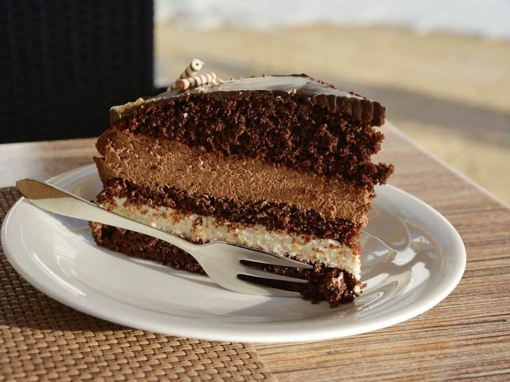

Pastel de Tres Chocolates

Imagen con fines ilustrativos
Instrucciones:
Preparación de la base:
Tritura las galletas: Coloca las galletas en una bolsa de plástico y tritúralas con un rodillo o procesador de alimentos hasta obtener migas finas.
Mezcla con la mantequilla: En un bol, mezcla las migas de galleta con la mantequilla derretida hasta que estén bien combinadas y húmedas.
Forra el molde: Presiona la mezcla de galleta en el fondo de un molde desmontable para pastel, creando una capa uniforme. Luego, refrigera el molde mientras preparas las capas de chocolate.
Preparación de las capas de chocolate:
Capa de chocolate negro:
Calienta la crema para batir en una cacerola hasta que empiece a hervir.
Retira del fuego y agrega el chocolate negro picado. Deja reposar durante unos minutos y luego mezcla hasta que el chocolate se derrita por completo y la mezcla esté suave.
Si lo deseas, puedes espolvorear la gelatina sin sabor sobre 2 cucharadas de agua fría y dejar que se hidrate durante unos minutos. Luego, disuelve la gelatina en la mezcla de chocolate caliente.
Vierte la mezcla de chocolate negro sobre la base de galleta en el molde. Nivela la superficie con una espátula y refrigera durante al menos 30 minutos, o hasta que esté firme.
Capa de chocolate con leche:
Repite el proceso anterior utilizando el chocolate con leche en lugar del chocolate negro. Vierte la mezcla de chocolate con leche sobre la capa de chocolate negro y refrigera nuevamente hasta que esté firme.
Capa de chocolate blanco:
Repite el mismo proceso utilizando el chocolate blanco. Vierte la mezcla de chocolate blanco sobre la capa de chocolate con leche y refrigera hasta que esté completamente firme, preferiblemente durante varias horas o toda la noche.
Capa de chocolate blanco:
Decorar el pastel: Una vez que todas las capas estén firmes, puedes decorar el pastel de tres chocolates con crema batida, virutas de chocolate, frutas frescas o lo que prefieras.
Servir: Desmolda con cuidado el pastel de tres chocolates y sírvelo en porciones individuales. ¡Disfruta de este delicioso y tentador postre!